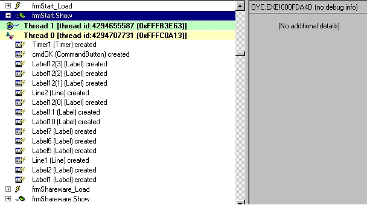

How to crack ORGANIZE! Your collection apps v5.18 by

hello dudes =)
today i will teach u how to crack vb apps with 3 Nags screens and
a time limit!!
i am sure you are saying : Fucking hard !!
heheh !! i was tracing with S-ice when i got an idea !!
i will explain how i did it !!
1)tools required : - Smart-check 6
- Hex editor
- a brain =)
2)how to crack the nags !!
so , for this we will use Smart check !
Load Oyc in SC and run it , click on the nag , wait for the ok button enable and
then exit this shitty app...
In smart check double clik on : frmOYCMain_load and look down until
you found the ".show" of the form in smart check !
you will see this :

so, in this case the important thing is : frmstart.Show.
At the right of smart check , you will see the offset where this is
located and the file.
for this nag we see that it is in : OYC.exe at the offset : 000FDA4D
OK !
I suppose you are thinking what the hell i want to show u !!
heheh
now , i used my brain to kick that nag , coz we now that a nag can be
called by a call , so i though why don't we go at this offset and look
for the 1st call near it ?
So , fire up your hex editor and go at this offset : 000FDA4D.
ok , now you know that a call start with : E8.... in hex and
his longer is 5 bytes !!!
So , in your favourite hex editor do a search a E8 above this offset
you will found : E8986FF0FF :)
replace it by nop (90) and you will obtain : 9090909090
save your files (do a backup before) and run the file !
Like magic , the first Nag is killed !!!!!!!!!!
Good !! hehe
Now , it is time to kick the second nag !!
you see on my picture above that there is another ".show"
do the same that for the first nag and the timer and the nag will be
out !!
i won't show u the value to replace , coz it is exaclty the same that
in the first nag. And it is good for you to practice :)
i want to say u that , when we kicked this nag , we kicked the Time
Limit of the prog too !! Good Feeling !
Ok , now the 3rd nag that won't be easy like the others !!
So, in smart check , double clik on : "mnuFExit_click" (you will
found it at the end of the smart check report)
then double click on "frmOYCMain_Unload" and scroll down until u see :
"frmEnd.Show" so look at the right and take the offset : 1001A1
Ok , now you say , we will do like the 2 others , and that will be good !
heheh , nop!! doesn't work !!!
Ok , i though a little and i remembered that you can look for a jump to
kick a nag , and in vb apps i always see JUMP like this : OF84 or OF85 =)
so, use your hex editor and go to this offset : 1001A1.
Do a seach of "0F" in the upper direction.And we have found : 0F849A000000
so replace it by 0F859A000000 (the je become jne) and save your files...
Now , run it !!
No more nags , time limit !!!!!!
Great , we made it !!
3)Notes:
i wrotte this tut to show , that we can patch VB apps and sometimes a brain
is more useful that tracing with Sice (i said : sometimes).
So, this way to crack vb nags don't work all the time , but i cracked some apps
using this way , so , don't be mad on me :)
if you see that the offset is in the MSVBVM50 or 60 dll , just do a copy of it
and place it in the app direcoty and now patch it.Like that the Prog will use this
Dll and not the one in Windows\system.
You won't be have prob with others apps who use the dll !!
I hope this tutorial was not too boring and sorry for my bad english...
if you have any questions , mail me to : ACiD_BuRN@nema.com or acid2600@hotmail.com
if you crack one app a day using this way , tell me plz :)
Greetings to :
ALl ReFLeXZ TeaM , All ECLiPSE TeaM , ALL PWA team , ALL Toxic TeaM and all CrossOver
Team coz i am member in this cool groups !!
Also greets to : tKC , BuLLeT , Duelist , Eternal Bliss , HarvestR,
Parker, Agora , duelist , R!SC , Lucifer48 , tC , Pozeidon ...
if i forget to put ur name here , sorry coz too many people to greets !!
and Maybe you can found me on IRC on Effnet under this channel : #c.i.a , #cracking4newbies ...
ACiD BuRN